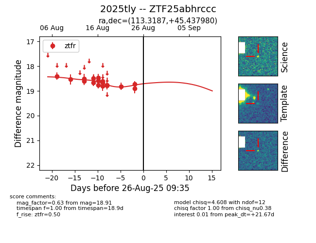

Target 2025tly at 2025-08-26 09:35, see:
FINK: fink-portal.org/ZTF25abhrccc
Lasair: lasair-ztf.lsst.ac.uk/objects/ZTF25abhrccc
ALeRCE: alerce.online/object/ZTF25abhrccc
TNS: wis-tns.org/object/2025tly
YSE: ziggy.ucolick.org/yse/transient_detail/2025tly
alt names
ZTF25abhrccc (ztf,fink)
2025tly (tns,yse)
coordinates:
equatorial (ra, dec) = (113.3187,+45.43798)
galactic (l, b) = (173.0770,+25.99238)
photometry
last ztfr=18.91
17 ztfr detections
